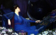
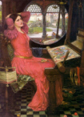
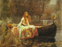

Alfred Lord Tennyson
The poem inspired several
paintings. Click the pictures below for a full view.
Music
John Waterhouse

Sir John Sidney
Meteyard

John Waterhouse

John Waterhouse
Waterhouse working
on
The Lady of Shallot
Arthur Hughes

Loreena McKennitt's
CD, The Visit, includes "The Lady of Shalott." Here is one source
for purchasing.
|
On either side the river lie
Long fields of barley and of rye,
That clothe the wold and meet the sky;
And through the field the road run by
To many-tower'd Camelot;
And up and down the people go,
Gazing where the lilies blow
Round an island there below,
The island of Shalott. Willows
whiten, aspens quiver,
Little breezes dusk and shiver
Through the wave that runs for ever
By the island in the river
Flowing down to Camelot.
Four grey walls, and four grey towers,
Overlook a space of flowers,
And the silent isle imbowers
The Lady of Shalott.
Only reapers, reaping early,
In among the beared barley
Hear a song that echoes cheerly
From the river winding clearly;
Down to tower'd Camelot;
And by the moon the reaper weary,
Piling sheaves in uplands airy,
Listening, whispers, " 'Tis the fairy
The Lady of Shalott."
There she weaves by night and day
A magic web with colours gay.
She has heard a whisper say,
A curse is on her if she stay
To look down to Camelot.
She knows not what the curse may be,
And so she weaveth steadily,
And little other care hath she,
The Lady of Shalott.
And moving through a mirror clear
That hangs before her all the year,
Shadows of the world appear.
There she sees the highway near
Winding down to Camelot;
There the river eddy whirls,
And there the surly village churls,
And the red cloaks of market girls
Pass onward from Shalott.
Sometimes a troop of damsels glad,
An abbot on an ambling pad,
Sometimes a curly shepherd lad,
Or long-hair'd page in crimson clad
Goes by to tower'd Camelot;
And sometimes through the mirror blue
The knights come riding two and two.
She hath no loyal Knight and true,
The Lady of Shalott.
But in her web she still delights
To weave the mirror's magic sights,
For often through the silent nights
A funeral, with plumes and lights
And music, went to Camelot;
Or when the Moon was overhead,
Came two young lovers lately wed.
"I am half sick of shadows," said
The Lady of Shalott.
A bow-shot from her bower-eaves,
He rode between the barley sheaves,
The sun came dazzling thro' the leaves,
And flamed upon the brazen greaves
Of bold Sir Lancelot.
A red-cross knight for ever kneel'd
To a lady in his shield,
That sparkled on the yellow field,
Beside remote Shalott.
The gemmy bridle glitter'd free,
Like to some branch of stars we see
Hung in the golden Galaxy.
The bridle bells rang merrily
As he rode down to Camelot:
And from his blazon'd baldric slung
A mighty silver bugle hung,
And as he rode his armor rung
Beside remote Shalott.
All in the blue unclouded weather
Thick-jewell'd shone the saddle-leather,
The helmet and the helmet-feather
Burn'd like one burning flame together,
As he rode down to Camelot.
As often thro' the purple night,
Below the starry clusters bright,
Some bearded meteor, burning bright,
Moves over still Shalott.
His broad clear brow in sunlight glow'd;
On burnish'd hooves his war-horse trode;
From underneath his helmet flow'd
His coal-black curls as on he rode,
As he rode down to Camelot.
From the bank and from the river
He flashed into the crystal mirror,
"Tirra lirra," by the river
Sang Sir Lancelot.
She left the web, she left the loom,
She made three paces through the room,
She saw the water-lily bloom,
She saw the helmet and the plume,
She look'd down to Camelot.
Out flew the web and floated wide;
The mirror crack'd from side to side;
"The curse is come upon me," cried
The Lady of Shalott.
In the stormy east-wind straining,
The pale yellow woods were waning,
The broad stream in his banks complaining.
Heavily the low sky raining
Over tower'd Camelot;
Down she came and found a boat
Beneath a willow left afloat,
And around about the prow she wrote
The Lady of Shalott.
And down the river's dim expanse
Like some bold seer in a trance,
Seeing all his own mischance --
With a glassy countenance
Did she look to Camelot.
And at the closing of the day
She loosed the chain, and down she lay;
The broad stream bore her far away,
The Lady of Shalott.
Lying, robed in snowy white
That loosely flew to left and right --
The leaves upon her falling light --
Thro' the noises of the night,
She floated down to Camelot:
And as the boat-head wound along
The willowy hills and fields among,
They heard her singing her last song,
The Lady of Shalott.
Heard a carol, mournful, holy,
Chanted loudly, chanted lowly,
Till her blood was frozen slowly,
And her eyes were darkened wholly,
Turn'd to tower'd Camelot.
For ere she reach'd upon the tide
The first house by the water-side,
Singing in her song she died,
The Lady of Shalott.
Under tower and balcony,
By garden-wall and gallery,
A gleaming shape she floated by,
Dead-pale between the houses high,
Silent into Camelot.
Out upon the wharfs they came,
Knight and Burgher, Lord and Dame,
And around the prow they read her name,
The Lady of Shalott.
Who is this? And what is here?
And in the lighted palace near
Died the sound of royal cheer;
And they crossed themselves for fear,
All the Knights at Camelot;
But Lancelot mused a little space
He said, "She has a lovely face;
God in his mercy lend her grace,
The Lady of Shalott."
|